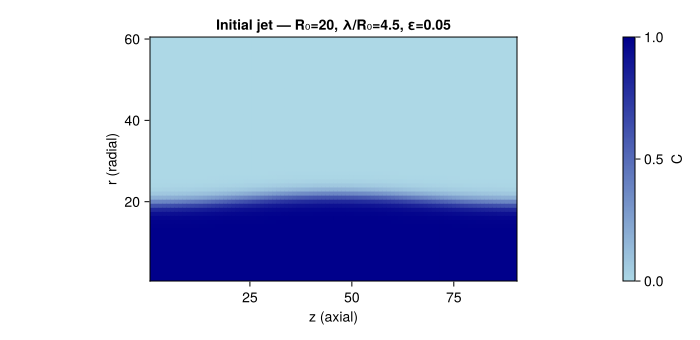
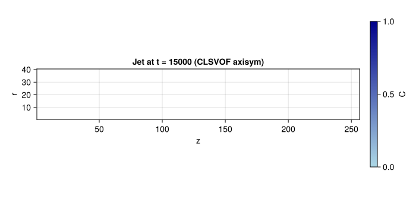
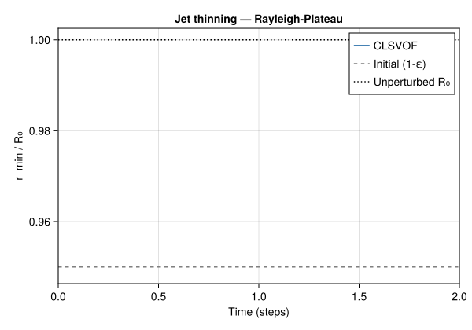
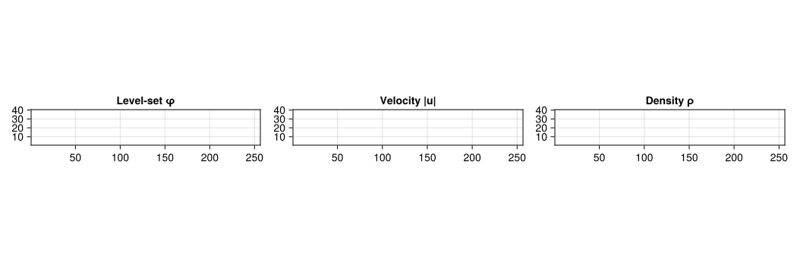

Rayleigh–Plateau Instability (Axisymmetric)
Problem Statement
The Rayleigh–Plateau instability is the fundamental mechanism by which a cylindrical liquid jet breaks up into droplets under surface tension. Any sinusoidal perturbation with wavelength $\lambda > 2\pi R_0$ (where $R_0$ is the jet radius) is unstable and grows exponentially (Rayleigh 1878; Plateau 1873).
The linear growth rate from inviscid theory is:
\[\omega^2 = \frac{\sigma}{\rho\, R_0^3}\, (kR_0)\, \frac{I_1(kR_0)}{I_0(kR_0)}\, \bigl[1 - (kR_0)^2\bigr]\]
where $k = 2\pi/\lambda$ is the axial wavenumber and $I_0, I_1$ are modified Bessel functions of the first kind. Maximum growth occurs at $kR_0 \approx 0.697$, corresponding to $\lambda \approx 9.01\, R_0$.
This is the most physically complex test in the Kraken.jl validation suite: it combines axisymmetric LBM, CLSVOF interface tracking, and surface tension with azimuthal curvature –- all in a single 2D simulation.
Axisymmetric LBM formulation
Instead of running an expensive 3D simulation of a cylindrical jet, we exploit the rotational symmetry: the 2D lattice uses cylindrical coordinates $(z, r)$ where $z$ is the axial (jet) direction and $r$ is the radial direction. The mapping to lattice indices is:
- $x \to z$ (axial, periodic)
- $y \to r$ (radial, axis at $j = 1$)
The axisymmetric formulation introduces several modifications compared to standard 2D LBM:
Li et al. (2010) collision (Li et al. 2010): the BGK collision includes direction-dependent source terms that account for the non-Cartesian coordinate system. These terms arise from the $1/r$ factors in the cylindrical Navier–Stokes equations and ensure that the Chapman–Enskog expansion recovers the correct axisymmetric momentum equations.
Specular reflection at the axis ($r = 0$): populations moving away from the axis are reflected back with swapped radial components ($f_6 \leftrightarrow f_9$, $f_7 \leftrightarrow f_8$). This enforces the symmetry condition $\partial u_z / \partial r = 0$ and $u_r = 0$ at the axis.
Azimuthal curvature: in cylindrical coordinates, the total curvature has two components:
\[\kappa = \kappa_1 + \kappa_2\]
where $\kappa_1$ is the meridional curvature (in the $(z, r)$ plane, computed from the level-set as in 2D) and $\kappa_2 = -n_r / r$ is the azimuthal curvature that arises purely from the cylindrical geometry. It is this azimuthal term that drives the Rayleigh–Plateau instability: a local decrease in radius increases $\kappa_2$, which increases the inward pressure, which further decreases the radius –- a positive feedback loop.
CLSVOF hybrid force
For this test, Kraken.jl uses the CLSVOF hybrid force model, which combines the best aspects of both interface representations:
Level-set curvature $\kappa = \nabla \cdot (\nabla\phi / |\nabla\phi|)$ provides a smooth, accurate curvature field. The level-set $\phi$ is redistanced at each step to maintain the signed-distance property.
VOF gradient $\nabla C$ localises the surface tension force precisely at the interface. The force $\mathbf{F} = \sigma\,\kappa_\text{LS}\,\nabla C$ combines LS accuracy with VOF localisation.
This hybrid approach is essential for axisymmetric problems where curvature accuracy near the axis (where $r \to 0$ and $\kappa_2$ diverges) is critical for physical fidelity.
Geometry
A liquid jet of radius $R_0 = 20$ is perturbed sinusoidally with amplitude $\varepsilon = 0.05$. The domain covers one wavelength $\lambda = 4.5\, R_0 = 90$ in the axial direction, with a radial extent of $3\, R_0 = 60$.

The perturbation amplitude $\varepsilon = 0.05$ is chosen to be small enough that the initial growth is well described by linear theory, allowing a quantitative comparison of the growth rate with Rayleigh's prediction.
Code
We use the CLSVOF axisymmetric driver which implements all the components described above: periodic BCs in $z$, specular reflection at the axis, VOF advection with LS redistanciation, hybrid surface tension force with azimuthal curvature, and Li et al. (2010) axisymmetric collision.
using Kraken
R0 = 20
λ_ratio = 4.5
ε = 0.05
σ = 0.01
ν = 0.05
ρ_l = 1.0
ρ_g = 0.01
result = run_rp_clsvof_2d(; R0=R0, λ_ratio=λ_ratio, ε=ε,
σ=σ, ν=ν, ρ_l=ρ_l, ρ_g=ρ_g,
max_steps=15000, output_interval=500)Results –- Jet Shape

The final jet shape shows the characteristic Rayleigh–Plateau morphology: the initial sinusoidal perturbation has grown into a pronounced thinning neck (where the jet narrows) and a swelling lobe (where liquid accumulates). The neck continues to thin until eventual breakup into a main droplet and (depending on parameters) satellite droplets.
Minimum Jet Radius vs Time

The thinning dynamics has two distinct phases:
Linear regime (early times): the perturbation amplitude grows exponentially as $\varepsilon\, e^{\omega t}$, and the minimum radius decreases slowly. In this regime, the growth rate can be compared quantitatively with Rayleigh's linear theory.
Nonlinear regime (later times): as the neck becomes comparable to the perturbation wavelength, nonlinear effects accelerate the thinning. The neck radius decreases rapidly toward zero (pinch-off). The thinning law near breakup follows a power law that depends on the viscosity ratio and the Ohnesorge number.
Level-Set, Velocity, and Density Fields

The level-set field $\phi$ (left panel) is positive inside the jet and negative outside, with $\phi = 0$ at the interface. The smooth variation of $\phi$ across the interface is what enables accurate curvature computation.
The velocity field (centre panel) confirms that the flow is concentrated at the thinning neck, where the capillary pressure drives liquid away from the neck toward the swelling lobe. This is the drainage flow that controls the thinning rate.
The density field (right panel) shows the sharp contrast between the jet interior ($\rho_l = 1$) and the surrounding gas ($\rho_g = 0.01$), with a smooth transition at the interface mediated by the VOF field.
Axisymmetric Implementation Summary
| Component | Method |
|---|---|
| Collision | Li et al. (2010) –- direction-dependent $\omega_f$ source terms |
| Axis BC | Specular reflection: $f_6 \leftrightarrow f_9$, $f_7 \leftrightarrow f_8$ |
| Curvature | $\kappa = \kappa_1 + \kappa_2$ with $\kappa_2 = -n_r/r$ from the level-set |
| Force | Hybrid CLSVOF: LS $\kappa$ + VOF $\nabla C$ |
| Streaming | stream_periodic_x_axisym_2d! (periodic $z$, specular axis, bounce-back outer wall) |
References
- Rayleigh (1878) –- On the instability of jets
- Plateau (1873) –- Statique experimentale et theorique des liquides
- Li et al. (2010) –- Improved axisymmetric lattice Boltzmann scheme
- Popinet (2009) –- Accurate adaptive solver for surface-tension-driven interfacial flows